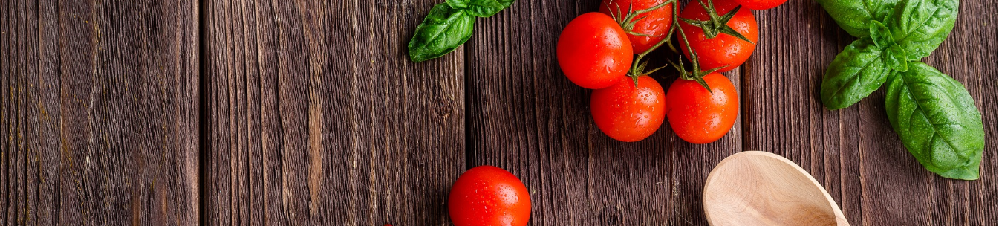

DE
Beliebte Gerichte

Pizza besteht aus Hefeteig der belegt wird und
im Anschluss gebacken wird. Es ist ein traditionelles
Gericht, welches seine Wurzeln in Italien findet. Die
weit verbreiteste Variante der Pizza ist mit Tomaten-
sauce auf dem Fladenbrot. Auf eine Pizza kann sogut wie
jeder Beleg und sehr viele andere Dinge wie z.B. Basilikum
oder sogar Jalapenoes.
https://pixabay.com/de/pizza-basilikum-knoblauch-kruste-1209748/
Lasagne ist ein Auflauf, welcher aus mehreren Teig-
schichten besteht, welcher, wie der Name schon vermuten
lässt, vermutlich wieder aus Italien stammt. Meistens wird
sie mit Parmesan und Bolognese serviert. Es gibt aber auch
hier mehrere Varianten der Zubereitung und auch für die
modernere Gesellschaft vegane Varianten der Lasagne.
https://pixabay.com/de/lasagne-nudeln-k%C3%A4se-tomaten-1900529/
Pfannenkuchen oder auch Eierkuchen sind in
einer Pfanne zubereitete Scheiben aus Mehl,
Ei, und Milch und sind auf der ganzen Welt
bekannt, bloß unter anderen Namen. Diese sollte
man jedoch nicht mit den Berliner Pfannkuchen
verwechseln, da diese grundlegend verschieden sind.
Auch hier gibt es kulturell unterschiedliche Varianten.
https://pixabay.com/de/pfannkuchen-schaumomelette-omelette-1984716/
Pommes Frites sind lange Kartoffelstangen, welche
fritiert serviert werden. Es gibt sie auf der ganzen
Welt, stammen aber aus Belgien und werden meistens
als Beilage oder als sogenanntes "FInger Food"
serviert. Mit der richtigen Sauce schmecken sie
am besten, wie z.B. Ketchup oder Mayonnaise.
https://pixabay.com/de/pommes-frites-kartoffeln-fast-food-525005/